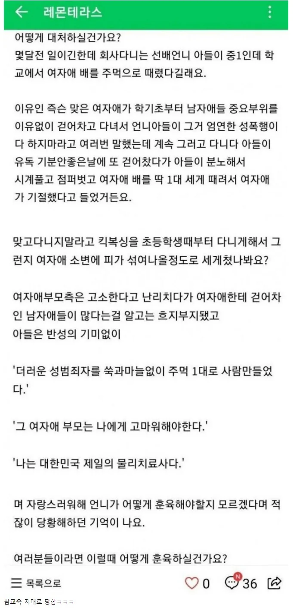

남자 랄부 ㅈㄴ 차고 다닌 중1 여학생의 최후
댓글
약간 북한뉴스식 말투네 쑥과마늘없이 ㅋㅋ
아들이 슬슬 머리 커 가면서 이런 행동 하면 처맞는다고 알려주고 있거든 하나 하나 세세하게
친구나 가족끼리는 괜찮고 친하지 않은 사람에게 하면 처맞는 행동 보일때마다 정색빨면서 알려주는데
남자 아이니까 알려주는거지만 여자애들은 본능적으로 눈치 보는게 있어서 덜하는편이지만
눈치 볼 필요 없는 세상에서 태어난 여자애들은 브레이크 없고 본인은 물리력으로 맞을 일이 없는것 처럼
고삐 풀린 망아치 마냥 살텐데 .... 라는 생각한다 차라리 지금 맞은게 다행이라고 생각된다
방식은 나쁘나 이제 다시는 안힐테니 참교육이네
선배언니가 아니라 본인같은데
캬
물리치료 남바완
필요한 폭력이였다고 본다.
중딩이 시게를 풀어? 주작스멜
ㅋㅋㅋㅋㅋㅋㅋㅋㅋㅋㅋ
물리 치료만한게 없어